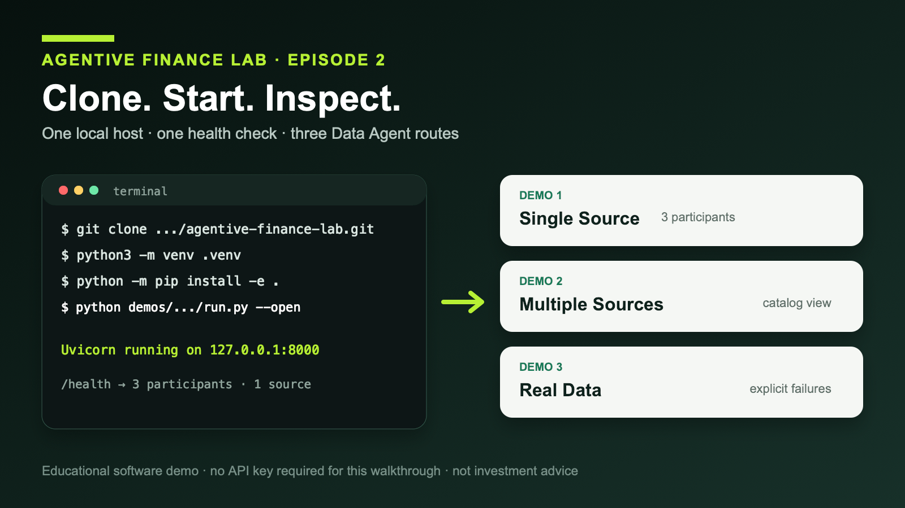
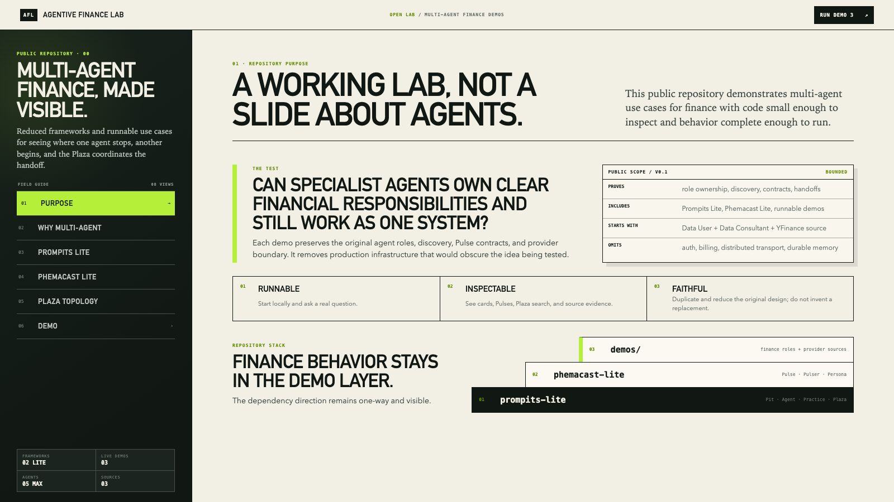

AI智域边界 · AGENTIVE FINANCE LAB · EPISODE 2
克隆公开仓库，创建 Python 环境，启动本地服务，检查健康端点，然后找到三个 Data Agent 演示。

一条可复现的本地路径：clone → Python 环境 → launcher → /health → 三个演示。
架构图可以把任何系统画得很完整，但图中的方框和箭头并不能证明代码真的能够安装、启动、注册参与者并返回可检查的结果。
Agentive Finance Lab 的 Episode 2 选择从运行开始。等读者先得到一个可复现的结果，后续文章再解释 Pit、Plaza、Practice、Pulse、Pulser 和 Persona。
本次操作不需要 API 密钥、数据库、Node.js、模型账号或外部智能体服务。你只需要 Git、CPython 3.11 或更高版本，以及安装 Python 依赖时的网络连接。
python3 --version
Windows 可执行 py -3 --version。版本必须是 3.11 或更高。
git clone https://github.com/alvincho/agentive-finance-lab.git cd agentive-finance-lab python3 -m venv .venv source .venv/bin/activate python -m pip install -e .
Windows PowerShell 可以使用 py -3 -m venv .venv、.\.venv\Scripts\Activate.ps1 和 python -m pip install -e .。
python demos/data-agent-network-demo/run.py --open
--open 会请求默认浏览器打开本地首页。如果浏览器没有自动打开，服务仍然可以运行，直接访问 http://127.0.0.1:8000/ 即可。
Uvicorn running on http://127.0.0.1:8000
curl --fail --silent http://127.0.0.1:8000/health
{
"status": "ok",
"demo": "data-agent-network",
"participants": 3,
"sources": 1,
"provider": "yfinance"
}
这表示本地 Single Source 网络已经启动，包含 Data User、Data Consultant 和一个 YFinance Data Source。它不表示 Yahoo Finance 一定可访问，也不保证之后的实时请求一定成功，更不代表任何数据适合投资决策。
/demos/data-agent-network//demos/data-agent-network/multiple-sources//demos/data-agent-network/real-data/Demo 1 注册 Data User、Data Consultant 和一个 YFinance Data Source。Demo 2 保留相同的用户侧和顾问角色，并加入 YFinance、Alpha Vantage 和 FRED 三个独立的数据源目录。Demo 3 在隔离的本地 Plaza 中实例化相同的五参与者形态，并公开受限的实时获取样例。

2026-08-29 Asia/Taipei 本地运行截图：同一页面提供仓库导览和三个 Demo 入口。
打开这些页面、请求目录建议或查看端点规格都不需要密钥。YFinance 本身不需要密钥。只有实时调用 Alpha Vantage 或 FRED 时，才需要把可选密钥放在服务器端、已被 Git 忽略的 .env 文件中。密钥不应该进入浏览器存储，也不应该成为 Pulse 输入。
在 Single Source 页面输入：
I need free daily prices and volume for AAPL.
Data Consultant 会从同步到内存的端点文档中返回建议。这条建议路径不访问上游供应商，也没有语言模型生成步骤。只有后续的 data_fetch 才会跨过所选数据源的供应商边界。
它证明公开缩减版仓库可以安装、启动、注册参与者，并通过保留的应用边界暴露健康检查和三个演示入口。这为后续检查依赖层、注册机制和 Pulse 调用提供了真实基础。
它没有证明生产可靠性、安全性、数据权限、供应商可用性、预测能力或投资回报。运行时也不会用测试夹具、缓存结果、合成价格或另一个供应商来掩盖失败。
下一集将解释依赖方向 demos → phemacast-lite → prompits-lite，以及为什么这里的“Lite”表示缩减范围，而不是重写原始架构。
开源仓库
https://github.com/alvincho/agentive-finance-lab#quick-start-clone-and-run-the-ui
原始英文文章只会在 Substack 正式发布并验证后由自动任务加入；本文核心内容不依赖外部链接。